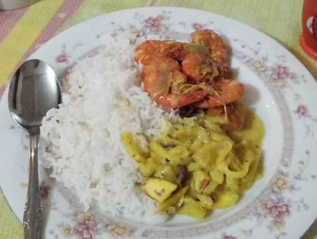
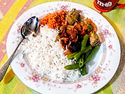
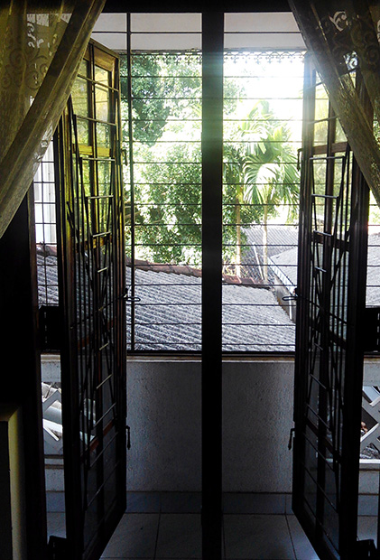

参加者レポート
大垣孝さま スリランカ参加レポート

スリランカでの1日
| 6:00 |
起床。朝は基本的に晴れており、日差しも強いので自然と目が覚めます。移動販売のパン屋さんの音楽や鳥の鳴き声も聞こえてきました。猛暑日は暑くて目が覚めました。 |
|---|---|
| 6:30 |
洗濯。バスタオルなど大きなものは洗濯機で、衣服はお風呂場で洗いました。朝から日差しが強いのでお昼には完全に乾いていました。 |
| 7:30 |
朝食。フルーツを丸ごとジュースにしたものや、カレーを食べました。 |
| 9:00 |
英語レッスン開始。課題(前日の英語のニュースを要約して自分の意見を言う、英語のスラングを覚えて使う)のチェックから入り、自分の知りたいスリランカのことについて英語で話し合いました。また、前日に観光地などにいった際はそこでのことについても話しました。先生は話を聞きながらこちらの弱点を指摘してくださるので、授業というよりは会話に近かったです。 |
| 12:00 |
昼食。朝食よりもメニューが多いです。カレーとココナッツサラダ等でした。食後には紅茶を飲みます。  |
| 13:00 |
レッスン再開。午後はシンハラ語のレッスンでした。日本でいう五十音から簡単な文まで丁寧に教えてくださいました。簡単な自己紹介程度はできるようになりました。 |
| 17:00 |
レッスン終了。近所の子供たちが遊びに来たときは一緒に遊んだりしました。来なかった日は課題をやりました。 |
| 19:00 |
夕食。カレーとスープ、カレーと揚げ魚などでした。 |
| 20:00 |
入浴。シャワーです。外が暑いので湯船に浸かる気にはなれませんでした。 |
| 21:00 |
就寝。課題の残りを行ったり英語で日記を書くなどした後に就寝です。外は暗くて静かなのでとても寝付きやすかったです。しかし熱帯夜の日にはあまり寝付けませんでした。基本的に掛け布団が要りませんでした。大きなベッドは蚊帳に囲まれていて特別な感じがしました。 |
食事について
現地の方々は右手を使って、お皿の右下の辺りでカレーとおかずを混ぜて好みの味を作って食べますが、こちらから申し出ればスプーン等も出してくださいます。
私は現地の生活に浸かりたかったので右手に挑戦しました。しかし食事に時間が掛かるので急いでいるときはスプーンを使いました。
課外活動
プログラム内に含まれていた孤児院の視察、低開発村の視察以外にも、観光地への一人旅や買い物もしました。日常生活だけでも十分刺激的でしたが、課外活動はより刺激的でした。例えば、ゴールという観光地で終電を逃した際は、英語で現地の方々に尋ねて自力で帰りました。日々のレッスンの成果です。トラブルはないに越したことはありませんが、そこでの対応によっては良い思い出になります。詳細はスリランカ留学体験の方に書かせていただいております。

45日間の総評

日々生活するだけでも驚きの連続で、非常に刺激的で有意義な毎日でした。日本のようにインフラが完全なわけではないので、不便を感じることも何度かありましたが、自然の力を利用していたのが印象的でした。例えば、暑ければ冷房や扇風機ではなく、辛い物を食べて体温をあげ、暑さに負けないようにする。夜は昼間発電した太陽光電池の電気を使うなどです。日本よりも環境に優しい面が非常に良いと思いました。
恐らく今後の人生を考慮しても、最も刺激的で有意義な日々であったと言えます。私の身近にスリランカへ行ったことのある人がおらず、完全に未知の世界への挑戦で出発前から大冒険でした。不安なこともありましたが、逢坂さんの丁寧なサポートのお陰で無事に帰国まで果たせました。現地では、初日から外食をしたり、病院に付き添ったり、上記の観光地にいったり、現地で働く日本人とお話ししたり、そして青年海外協力隊、他大学の学生の方々と一緒にシナモン畑へ行くなど、人との出会いが日本よりも多かったです。
英語で日記を書いておりましたが、書ききれないほどのことが毎日起こりました。そして、勿論英語力も向上しました。本プログラム参加前は、ネイティブの方々と会話するのが苦手でしたが、参加後は積極的にお話しすることができるようになり、英語を誉められることもあります。これによって海外の方の意見も沢山聞けるようになりました。TOEICもリスニングでは9割ほど採れるようになり、スコアも100点ほど上がりました。
英語スキルはもちろんのこと、異なる価値観や事情に対しての考え方が大きく変わりました。特に問題の表面だけでなく歴史的経緯や根元までしっかり理解しなければならないと思いました。このような経験の機会をご提供くださりまことにありがとうございました。

蚊帳の中で寝ます。